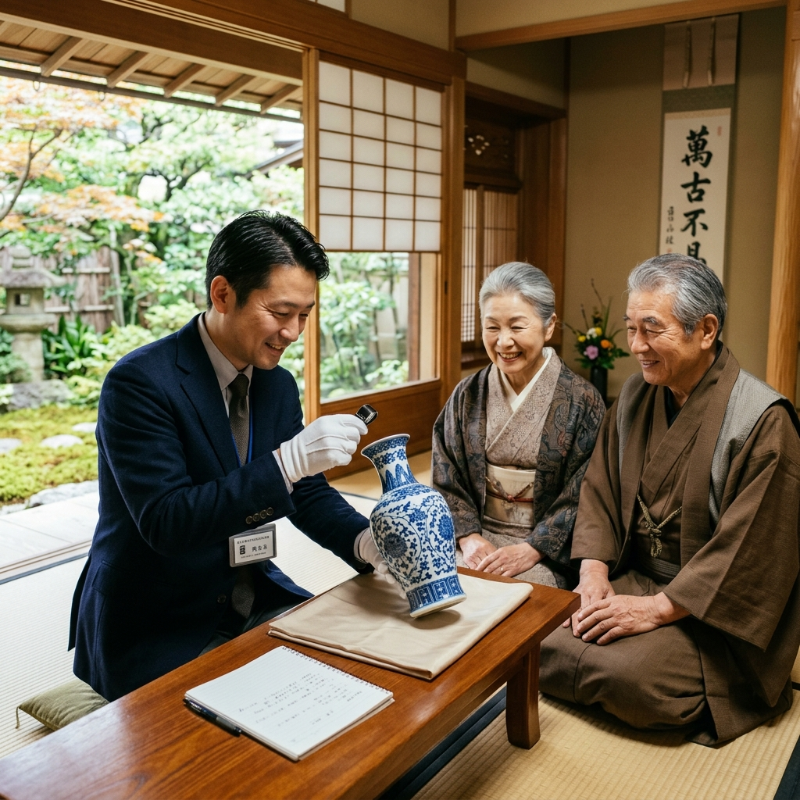
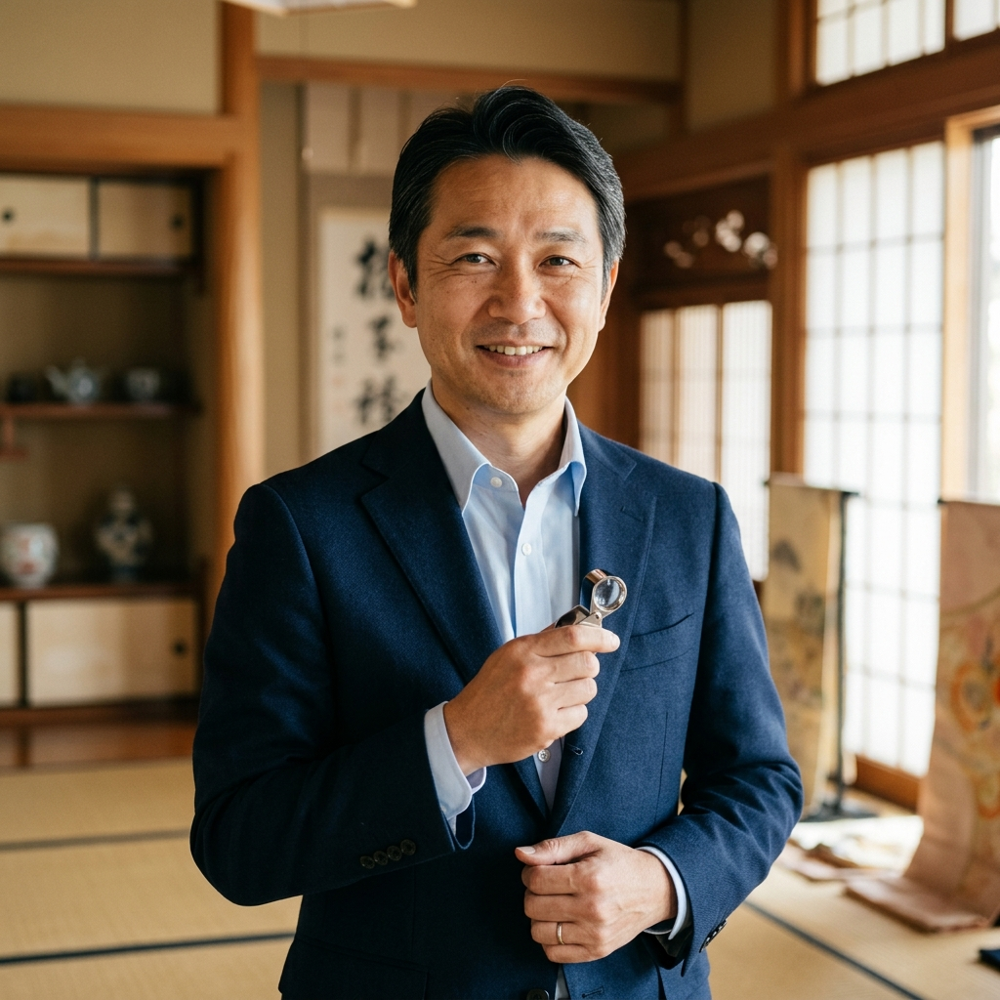
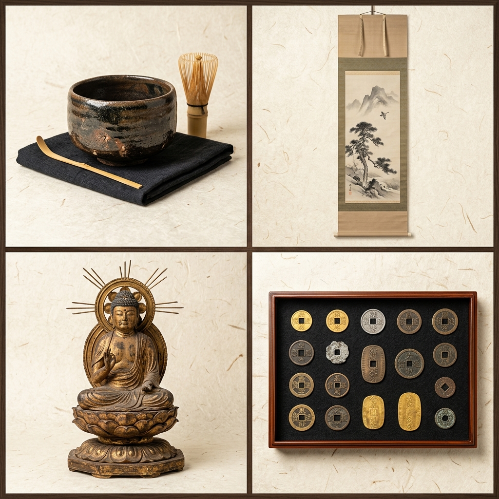

ガラクタに見えるが、実は価値があるのではと不安。
鑑定士に横柄な態度をされないか、無理矢理買われないか怖い。
重くて運べない、蔵の中を丸ごと見てほしい。
遺品整理のために早く整理して部屋を空けたい。

私たちがお預かりするのは、単なる「物」ではありません。持ち主様の「想い」まで丁寧に査定し、次の方へ繋ぐお手伝いをさせていただきます。

押し入れの奥に眠っていた、亡き父の掛け軸を見ていただきました。汚れていて期待していませんでしたが、驚くような価値があることがわかり、丁寧に説明してくださった姿に感動しました。
引越しに伴うコレクションの整理で依頼しました。電話をしてその日の午後に来てくださり、一点一点、箱の有無までしっかり査定。その場で現金でお支払いいただけたのも助かりました。
お電話、またはお申込フォームより、ご希望の日時をご相談ください。
鑑定スタッフが玄関先、または指定の場所（蔵など）へお伺いします。
一点一点詳しく鑑定し、現在の市場価格に基づいた査定額を提示します。
査定額にご納得いただけましたら、その場で現金にてお支払いします。
骨董品、茶道具、掛軸、陶磁器、古銭、切手から、古いおもちゃやレトロな家電まで幅広く買取いたします。「こんなボロボロでも価値があるの？」というお品物こそ、ぜひ拝見させてください。
いいえ。出張費用、査定費用などは一切いただきません。査定額にご満足いただけない場合のキャンセル料も無料ですので、お気軽にお試しください。
もちろんです。無理な勧誘や買い取りは一切ございません。ご家族で相談されたい場合など、保留にすることも可能です。お客様の納得を第一に考えております。
Safe · Free · Professional
ご相談は完全無料。秘密は厳守いたします。